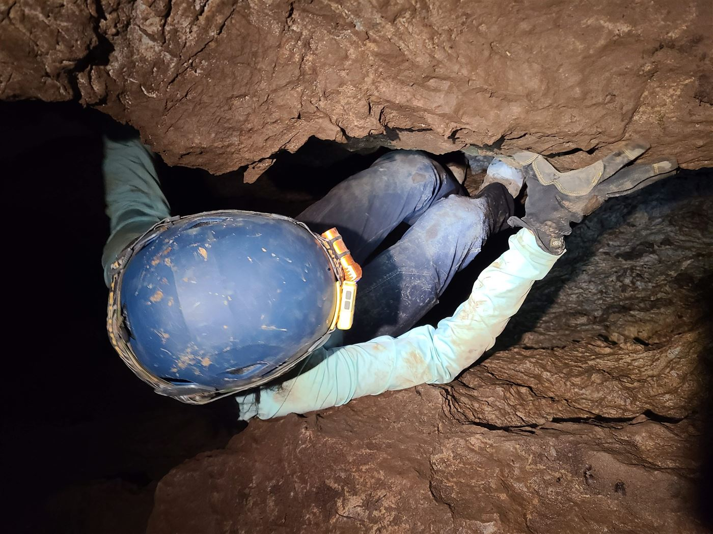
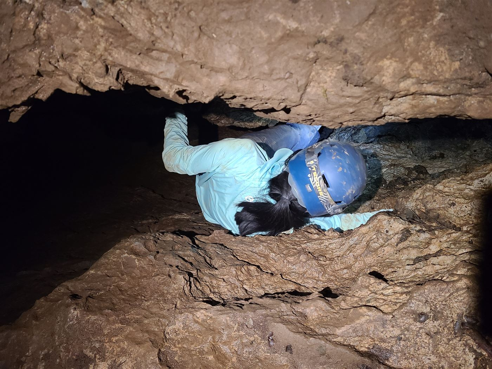
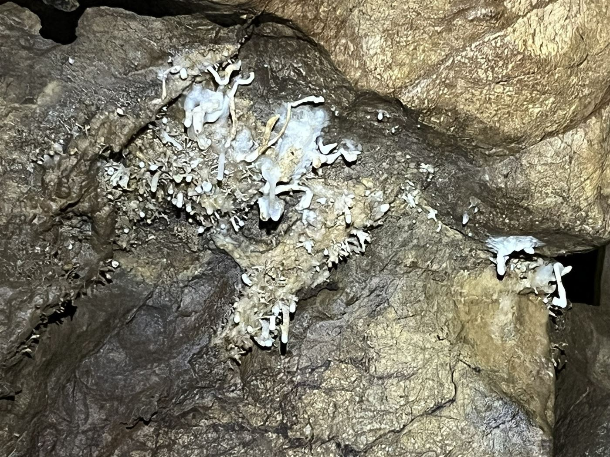
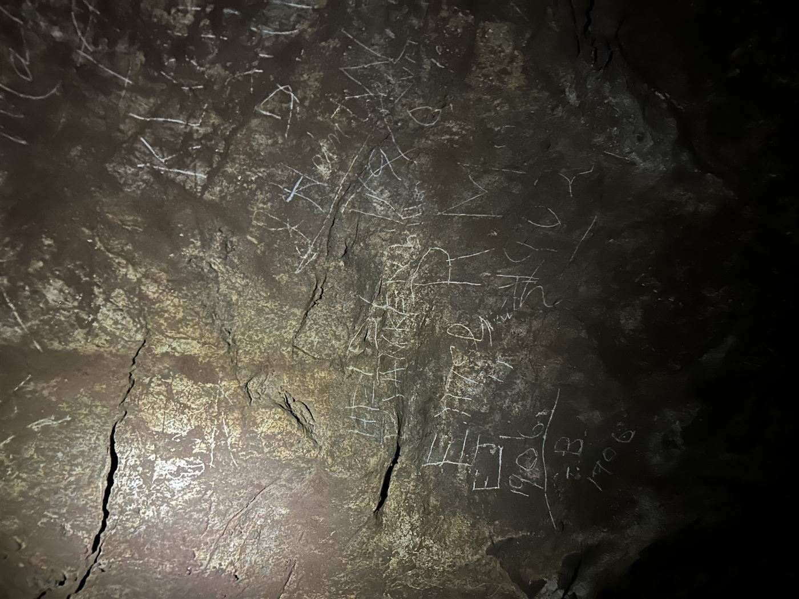
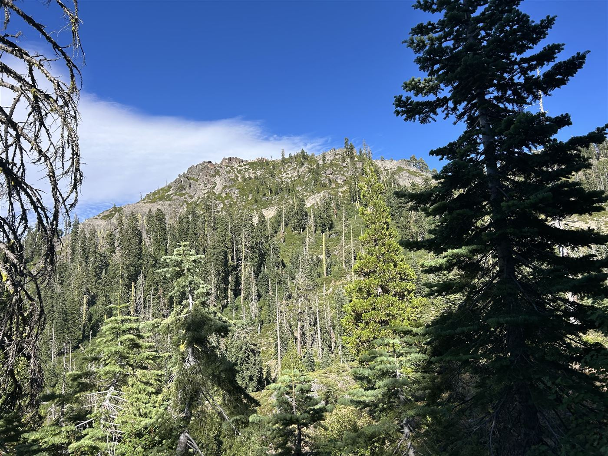
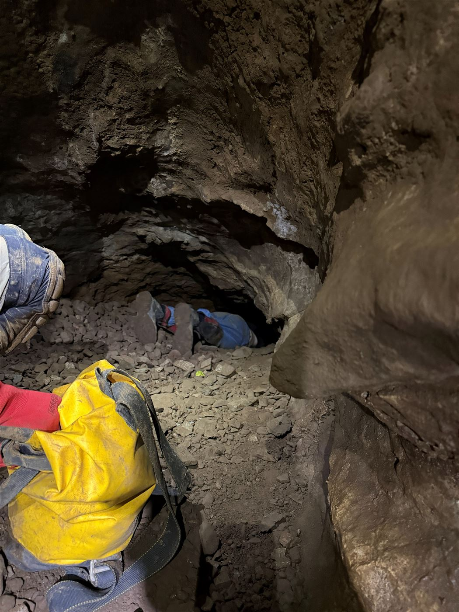
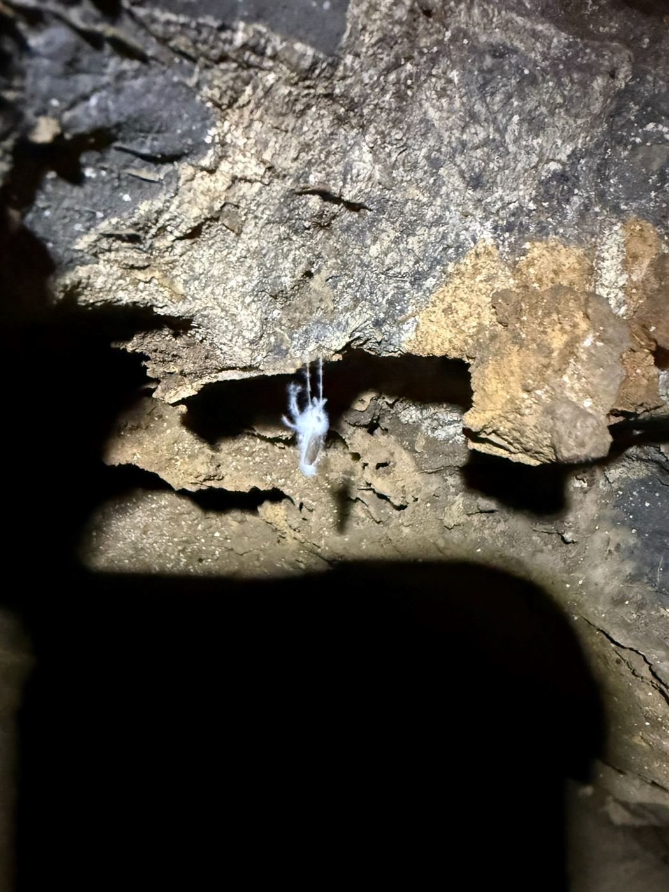
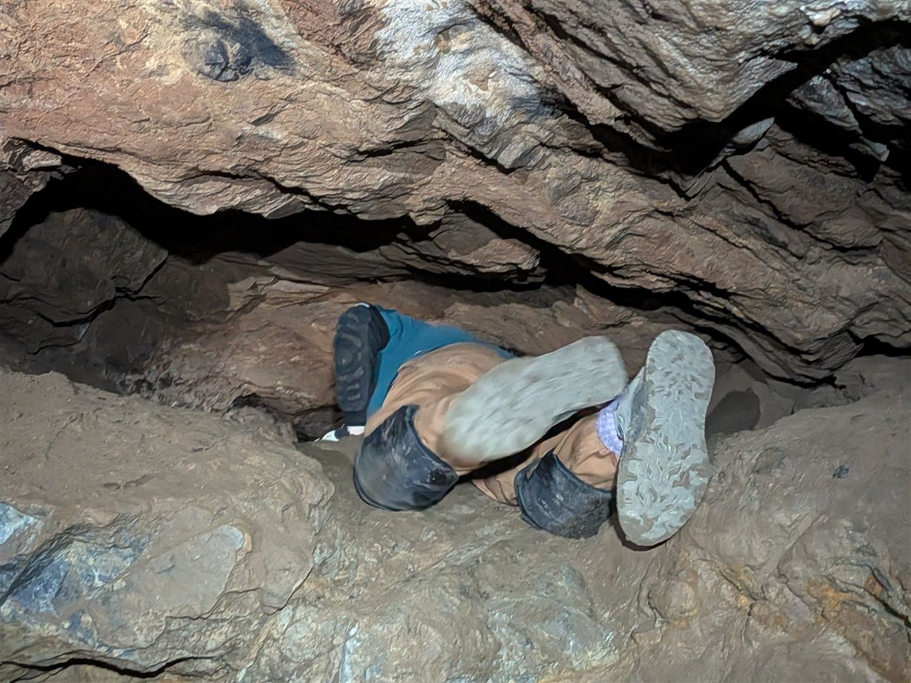

Avalanche Cave is a small-ish spot with a couple squeezes in between entrances. I managed to do a thru trip and learn what helictites were.








Getting there
This cave was hard to get to — a 3h drive up to Grass Valley and additional 1.5h on a very bumpy logging road filled with rocks. Probably the bumpiest ride I ever took to a trailhead, and I've taken a lot.
The location felt rather remote, and I suspected this cave was rarely visited. We had to bushwhack down a steep slope, and manzanita was quite dense. We waded through trees and brush down to a dry creekbed which was much clearer to navigate.
Cave entrance was large and immediately there was a small pit. There was room for a small 2ft wide ledge next to the pit that we had to crawl across, as we were butted up against rock on the side and above our heads.
We saw a decent amount of helictites and mold, and made our way through to a squeeze that connected both entrances of the cave. This was probably the smallest one I'd been through yet. Jen made her way through, then Levi tried and decided against it. Next up was Ryan, and when he gave up I immediately said I was screwed if he didn't want to do it. But I decided to take a look anyways out of curiosity, and after a pause decided to go for it. The hole looked impossibly tiny, maybe a foot tall and 2.5 wide. I could hear Jen muffled on the other side, encouraging me through. Hated the idea of "supermanning" through with both arms extended — how would I get out? However, her tip to do a half-superman with one arm extended and one arm pressed down against my body worked well. I took some time to shimmy through, thanking her for her pep talk, and pushed with my feet as I turned my head to the side to allow my helmet through. So I went through blindly. There was a second squeeze after that, considerably shorter. More like a constriction as I believe it's called. Running high on the accomplishment, we proceed through.
Helictite hunt
We were on the hunt for a "secret helictite room," marked on the map.
Helictites to me look like soda straws and change axis from vertical during growth. They seem to defy gravity and hook, curve, and otherwise squiggle, defying the usual vertical stalactite template. Apparently people still don't know how they grow. Is it wind/air movement?
Jen and I found 2 ledges that led up. The first was incredibly slippery, and didn't seem possible to climb. Jen made her way up the second ledge quite quickly with intentional footwork, and I fumbled around for quite a while. Eventually I was able to shimmy up by going backwards, facing outward butt on the rock. Unfortunately there was nothing on the platform. We did find a different ledge going down, but it seemed taller and decided against it, as we didn't think we could get back up from there. The map also seemed to indicate it led to a hallway with a dead end. Jen shined a light down to see if it was worth exploring, but the helictites seemed sparse.
No crazy exposure here, with the exception of an interesting chimney section. There was an option to go down a sort of chimney — more like two rock faces separated by a four foot gap and a small drop below. Enough of a drop to make me nervous. Kai speedily went through by stemming with his butt and legs in a classic sort of sitting position. I tried that and instead opted to very carefully downclimb down into the gap instead of traversing across it. We found two small rooms, but no secret helictite room, so I went back up by climbing up the chimney instead of stemming across again. I do think one of these days I should do it that way, but it is kind of scary. If you don't apply enough pressure against the walls with your back and feet, you'd fall straight through.
Organic things
Past that the second entrance was close by, and along the way we saw a little nook with organic material and mold, likely some nest for a mouse. Also found some plants growing within the cave, and Kip was pretty shocked as there is no light and the few leaves looked lush and wide. Because Kip (a veteran caver) was surprised, I was surprised. We continued and along the second entrance were thousands of bugs (mosquitoes?) hanging on the walls by two feet. They were covered with fuzzy white mold, and incredibly densely packed. Very eerie and I was glad I didn't brush up against them. I constantly thought about how many mold spores I must've been breathing in there.
Upon exit, it turns out Kip was able to locate the secret helictite room, but took pictures and assured us there wasn't much in there. I guess we were scammed, but that did make me feel good to have missed it.
The bushwhack back took quite a while going uphill, and at one point I definitely went a suboptimal way across a very steep slope, scrambling and worried about a fall. Luckily we made it back early and I enjoyed a loaded burrito as we waited for the rest of the crew.
Immediately after, I did feel that it was not the most impressive cave, especially for the effort to get there. But reading about helictites now makes me feel it is more special than I originally thought. Perhaps I was spoiled with going to the Shasta ice caves as my first trip, and Crystal cave as my second. Overall I had a great time and am very proud that I attempted the squeeze. No ticks from the bushwhack, and shockingly very few mosquito bites. From the cave itself I only suffered a copious amount of mud on my clothes from the cave, and didn't get massive bruises the way I did from Crystal. I think this is partially because this cave had softer mud in the squeezes and wasn't hard rock. Much easier to push against and less painful too! I loved how my kneepads held up here and am still considering elbow/shin pads for the future.